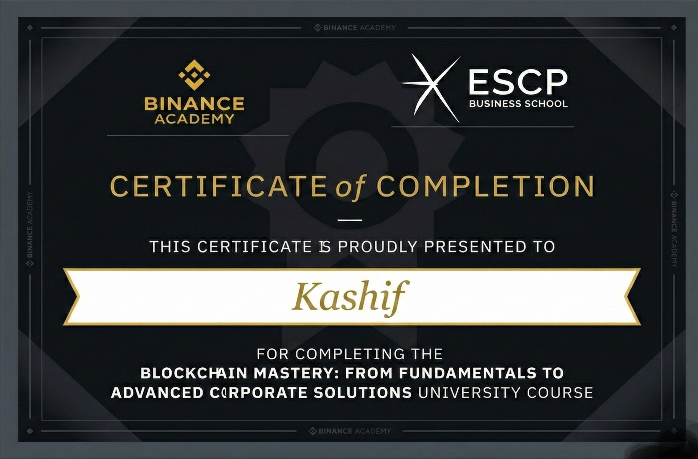
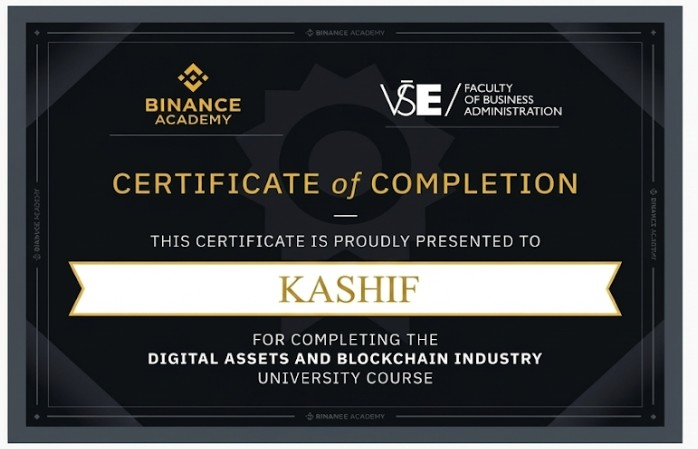
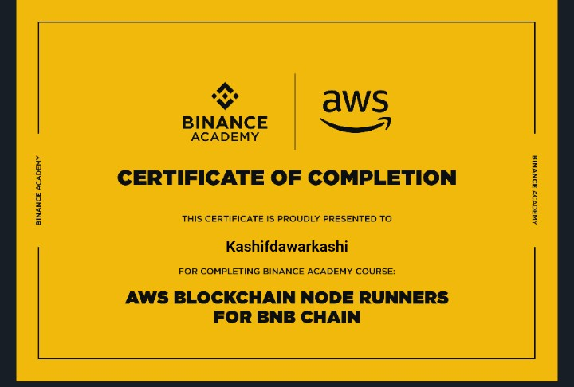

About Me
INTRODUCTION: THE GENESIS OF A DEVELOPER
My name is Kashif Dawar, and I am a software engineer driven by an obsession with how digital systems shape our reality. My journey began not just with lines of code, but with a deep curiosity about the mechanics of the internet. As an undergraduate student of Software Engineering, I made a conscious decision early on: I would not settle for mediocrity. I adopted a "Zero-to-Hero" philosophy, a mindset that treats every gap in knowledge as a challenge to be conquered. This drive has propelled me from understanding basic HTML to architecting complex, data-driven applications using the MERN stack. I don't just build websites; I construct digital assets that are robust, secure, and engineered for growth.
TECHNICAL MASTERY: THE FULL-STACK ARCHITECT
In the realm of development, I specialize in the MERN Stack (MongoDB, Express.js, React, Node.js). This JavaScript-centric architecture allows me to maintain a unified logic from the database to the client interface. My approach to frontend development goes beyond aesthetics; I utilize React.js and Next.js to create user interfaces that are reactive and lightning-fast. I believe that a user's time is precious, and every millisecond of latency is a friction point I aim to eliminate. On the backend, I leverage the asynchronous power of Node.js to build scalable APIs that can handle high traffic without buckling under pressure. Whether it's integrating Stripe for payments, managing state with Redux Toolkit, or designing schema-less databases with MongoDB, I ensure every component interacts seamlessly.
THE SEO PHILOSOPHY: VISIBILITY IS VITAL
A beautiful application that no one visits is a ghost town. This realization led me to master Technical SEO. Unlike many developers who treat SEO as an afterthought, I bake it into the architecture of my code. I understand the nuances of Core Web Vitals, the importance of Semantic HTML, and the power of Schema Markup (JSON-LD) in helping search engines understand context. I optimize for the Google bot as much as I optimize for the human user. From Server-Side Rendering (SSR) in Next.js to optimizing asset delivery pipelines, my goal is to ensure that the applications I build dominate the search engine results pages (SERPs).
FINTECH FUSION: THE TRADER'S EDGE
What sets me apart from the typical developer is my active involvement in the financial markets. I am an experienced Crypto Trader. This isn't a passive interest; it is a discipline that has forged my understanding of risk management, market psychology, and economic cycles. I analyze charts, understand liquidity flows, and make decisions based on data, not emotion. This background gives me a unique advantage in the Fintech sector. I don't just understand how to code a trading bot or a dashboard; I understand the financial logic behind it. I know what a user looks for in an exchange interface, how critical slippage is in a decentralized exchange (DEX), and why security is paramount when handling digital assets.
BLOCKCHAIN & WEB3: BUILDING THE FUTURE
Recognizing that the future of finance is decentralized, I pivoted hard into Blockchain Technology. I realized that to be a true "Hero" in this narrative, I needed to understand the immutable ledger. I dove deep into the mechanics of Smart Contracts, DApps (Decentralized Applications), and Consensus Mechanisms. I studied how Automated Market Makers (AMMs) like Uniswap revolutionize liquidity provision and how Layer-2 solutions are solving the scalability trilemma. My expertise covers the full spectrum of Web3, from the theoretical economics of Tokenomics to the practical deployment of nodes on cloud infrastructure.
CERTIFIED EXPERTISE: PROOF OF WORK
I believe in evidence-based competence. My portfolio is backed by a rigorous academic and professional track record. I have secured over 13 verified certifications from global institutions. I hold credentials from ESCP Business School in Blockchain Mastery, validating my ability to implement corporate-grade solutions. I have studied Digital Assets at VŠE (Prague University of Economics), bridging the gap between tech and business strategy. I am a certified AWS Blockchain Node Runner, proving my capability to manage infrastructure on the cloud. From Regulatory Compliance with the Global Fintech Institute to Sustainability studies with the University of Oulu, I have ensured my knowledge is holistic, compliant, and future-proof.
THE "ZERO-TO-HERO" MENTALITY
This journey is far from over. "Zero-to-Hero" is not a destination; it is a continuous process of evolution. I am constantly upskilling, currently exploring advanced Python integration with AI models to create smarter financial tools. I am Kashif Dawar—a builder, a trader, and a relentless learner. I am ready to deploy my arsenal of skills to build the next generation of web and blockchain solutions.
My Tech Arsenal
Frontend
React.js / Next.js
Tailwind CSS
Redux Toolkit
Backend
Node.js / Express
Python / Django
REST APIs
Database & SEO
PostgreSQL / MongoDB
Technical SEO
Schema Markup
Technical Expertise
Featured Projects
Top Certifications
I have rigorously upskilled in the Web3 domain, earning recognized certifications from Binance Academy in partnership with top global institutions. Below are my most prestigious credentials demonstrating expertise in Corporate Blockchain, Digital Assets, and Cloud Infrastructure.

Blockchain Mastery (ESCP Business School)

Digital Assets & Industry (VŠE)

AWS Blockchain Node Runners